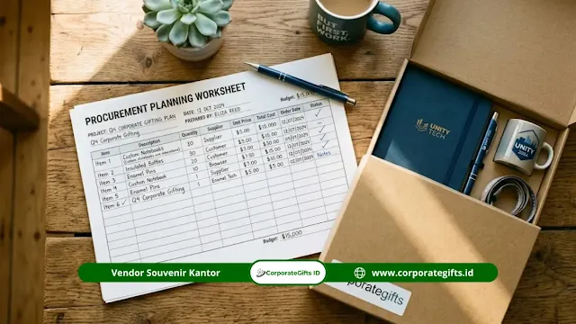

Corporate Gifts ID - Anggaran souvenir MoU kampus swasta adalah kalkulasi menyeluruh pembiayaan pengadaan cinderamata institusi yang mencakup harga satuan produk, ongkos kustomisasi dual-branding, kemasan boks eksklusif, serta biaya logistik pengiriman. Idealnya, rancangan anggaran ini disusun minimal 21 hari kerja sebelum agenda serah terima resmi berlangsung agar institusi terhindar dari pembengkakan biaya produksi kilat (rush order) di menit terakhir.
Bagi perguruan tinggi swasta (PTS), momentum penandatanganan Nota Kesepahaman (MoU) atau Perjanjian Kerja Sama (MoA) dengan mitra industri, lembaga riset, maupun universitas mitra luar negeri merupakan ajang unjuk reputasi kelembagaan. Penyerahan cinderamata yang dirancang secara profesional akan mengukuhkan kesan bahwa kampus Anda menjunjung tinggi nilai kemitraan yang setara dan berkesinambungan. Simak panduan kami tentang souvenir mitra kampus swasta pilihan dan tips pemesanan untuk melihat pilihan produk favorit.
Mengapa Perencanaan Anggaran Souvenir Mitra Kampus Swasta Sering Terlambat?
Dalam alur kerja kepanitiaan akademik, pengadaan suvenir sering kali baru dipikirkan setelah hal-hal teknis seperti naskah MoU, susunan acara protokoler, dan hidangan selesai difinalisasi. Padahal, pembuatan produk kustom dengan sematan dual-logo resmi membutuhkan tahapan verifikasi grafis dan produksi yang tidak instan.
Keterlambatan pemesanan memaksa vendor memberlakukan tarif lembur dan ekspedisi kilat (overnight delivery) yang dapat mendongkrak total pengeluaran hingga 20% sampai 30% dibanding tarif normal. Oleh karena itu, bagian kerja sama kelembagaan universitas disarankan menetapkan jadwal pengadaan internal minimal 3 minggu sebelum acara.
5 Komponen Utama Biaya Souvenir MoU Mitra Kampus Swasta
Menghitung anggaran suvenir kemitraan kampus yang akurat bertumpu pada lima komponen struktural berikut:
1. Harga Satuan Produk Utama
Harga dasar produk merupakan porsi terbesar dalam anggaran. Komponen ini sangat dipengaruhi oleh jenis material yang dipilih, misalnya buku agenda bersampul kulit sintetis dengan jilid magnetik atau tumbler berinsulasi ganda dari bahan baja nirkarat tahan karat SUS 304 food-grade. Kuantitas pesanan yang memenuhi batas Minimum Order Quantity (MOQ) akan menekan harga per unit secara signifikan.
2. Biaya Kustomisasi dan Setup Dual-Logo
Penyematan logo kampus berdampingan dengan logo perusahaan mitra (dual-branding) memerlukan biaya setup plat cetak, film sablon, atau kalibrasi mesin laser engraving. Tanyakan secara transparan kepada pihak vendor apakah penawaran yang diberikan sudah mencakup seluruh biaya artwork dan jasa cetak atau masih dihitung terpisah per titik logo.
3. Biaya Kemasan (Packaging & Hardbox)
Dalam prosesi seremonial resmi di hadapan pimpinan rektorat dan mitra bisnis, kemasan boks kaku (rigid hardbox) bertekstur mewah memegang peranan krusial dalam membentuk persepsi prestisius. Komponen kemasan seperti busa die-cut pembentuk dudukan produk, kertas pembungkus (tissue paper), dan pita satin umumnya memakan alokasi sekitar 15% hingga 20% dari total nilai produk.

Kombinasi suvenir MoU perguruan tinggi: tumbler insulasi, notebook kulit emboss, dan pulpen metalik dalam kemasan hardbox elegan.
4. Ongkos Kirim dan Logistik Terjadwal
Pengiriman paket gift box dalam volume besar antarprovinsi membutuhkan penanganan kargo yang aman dengan proteksi palet kayu guna mencegah penyok pada kemasan boks. Menjadwalkan pengiriman lebih awal menggunakan kargo darat jauh lebih hemat dibanding pengiriman udara kilat saat tenggat waktu mepet.
5. Alokasi Buffer dan Dana Tak Terduga
Sisihkan dana cadangan (buffer) sekitar 10% dari total pagu anggaran. Dana ini berfungsi sebagai bantalan finansial apabila terdapat penambahan kuantitas delegasi tamu VIP secara mendadak atau kebutuhan revisi pelat cetak tambahan.
Tabel Rincian Komponen Biaya Anggaran Souvenir MoU
Berikut matriks proporsi struktur anggaran pengadaan suvenir kemitraan kampus yang lazim diterapkan:
| Komponen Biaya | Proporsi Anggaran (%) | Cakupan Rincian Biaya | Tips Optimasi Penghematan |
|---|---|---|---|
| Harga Satuan Produk Utama | 55% - 65% | Produk fisik (tumbler stainless, agenda kulit, pen logam) | Pesan dalam batch besar tahunan untuk harga pabrik tier terendah |
| Kustomisasi & Dual-Logo | 10% - 15% | Plat sablon, setup grafir laser, deboss logo PTS & mitra | Pilih grafir laser monokrom yang awet tanpa biaya tinta ekstra |
| Kemasan & Hardbox | 10% - 15% | Rigid hardbox, busa die-cut, kertas wrapping, pita satin | Gunakan ukuran boks standar vendor tanpa biaya pisau cetak baru |
| Ongkos Kirim & Asuransi | 5% - 8% | Kargo darat/udara, packing kayu, proteksi asuransi | Kirim minimal H-7 dengan jalur kargo reguler berbiaya hemat |
| Buffer & Dana Tak Terduga | 10% | Tambahan delegasi mendadak, cadangan penggantian retur | Kunci daftar nama tamu kehormatan H-14 untuk cegah revisi |
3 Strategi Efisiensi Anggaran Tanpa Mengorbankan Kualitas
Institusi pendidikan swasta dapat memangkas biaya pengadaan suvenir tanpa menurunkan derajat kehormatan acara dengan menerapkan tiga taktik berikut:
Strategi 1: Manfaatkan Skala Pemesanan Tahunan (Bulk Order)
Konsolidasikan seluruh kebutuhan cinderamata penandatanganan kerja sama dari berbagai fakultas ke dalam satu tahun kalender akademik. Memesan 200 hingga 500 paket suvenir netral (tanpa tanggal acara) akan mengamankan harga grosir yang jauh lebih bersahabat dibanding memesan eceran 20 paket per seremoni.
Strategi 2: Pilih Produk dengan Nilai Pakai Harian Tinggi
Prioritaskan suvenir fungsional seperti tumbler tahan suhu, buku catatan kerja, atau USB flashdisk. Produk yang terus dipakai oleh pimpinan mitra dalam rutinitas kerjanya memberikan dampak eksposur merek berkelanjutan yang sebanding dengan investasinya.
Strategi 3: Tetapkan Hierarki Souvenir Berdasarkan Posisi Protokoler
Klasifikasikan paket suvenir sesuai struktur tamu delegasi: paket gift set lengkap dalam boks kayu atau hardbox untuk pimpinan tertinggi (Rektor, Dekan, atau Direktur Utama), sedangkan staf pendamping teknis menerima paket fungsional tunggal seperti tumbler grafir nama.
Cara Mendokumentasikan Anggaran Souvenir untuk Pelaporan Internal
Penyusunan Rencana Anggaran Biaya (RAB) yang rapi akan mempercepat proses verifikasi oleh bagian keuangan universitas dan rektorat. Cantumkan rincian spesifikasi teknis barang, jumlah pesanan, harga satuan, pajak pertambahan nilai (PPN), dan lampiran surat penawaran harga resmi (sph) dari vendor terpercaya.
Bagi institusi yang menerapkan aturan pembanding minimal tiga penawaran (three-quote rule), mintalah surat penawaran dari vendor rekanan di awal minggu perencanaan agar proses administrasi tidak menghambat jadwal produksi.
Pertanyaan Seputar Anggaran Souvenir MoU Kampus Swasta (FAQ)
Kesimpulan Praktis
Penyusunan anggaran suvenir MoU kampus swasta yang matang tidak sekadar berfokus pada perbandingan harga satuan produk, melainkan pada pemahaman menyeluruh atas seluruh siklus biaya pengadaan. Dengan menerapkan manajemen tenggat waktu yang disiplin dan sistem tiering protokoler, institusi Anda dapat menyajikan cinderamata berkelas yang merefleksikan kehormatan universitas secara akuntabel.
Konsultasikan kebutuhan cinderamata kemitraan kampus Anda bersama Corporate Gifts ID. Tim spesialis kami siap menyusun estimasi penawaran harga resmi (RAB B2B), sampel visual mockup dual-logo cuma-cuma, serta garansi ketepatan waktu pengiriman hingga ke lokasi seremoni Anda.